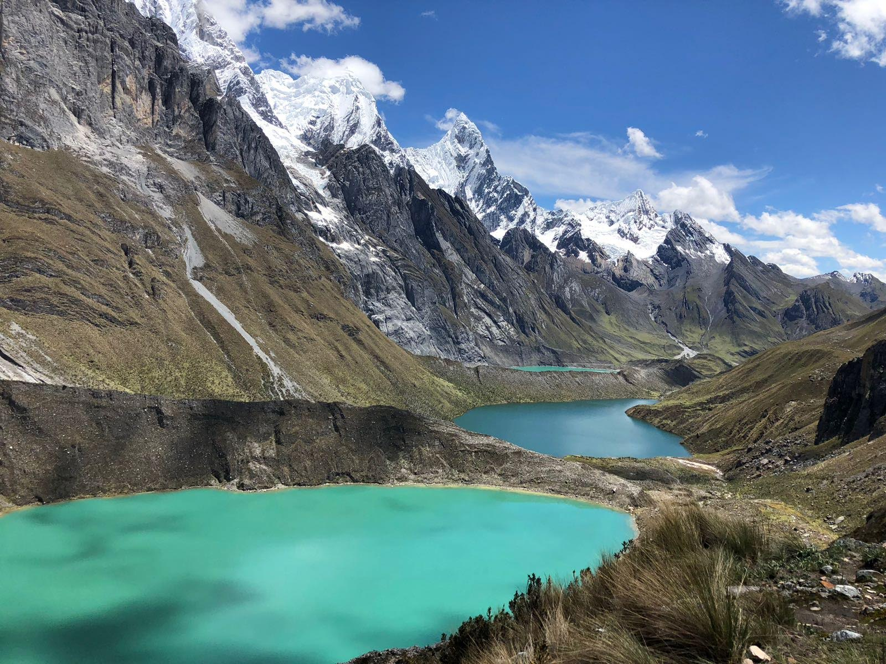

מהו סוד קסמה של דרום אמריקה? מאחורי המסיבות המטורפות, החופים הבתוליים והמחייה הזולה שוכנת יבשת מופלאה שקסמה טמון במורשתה, בנופיה עוצרי הנשימה ובאנשים שלא מפסיקים לחייך ולקדש את ערך המשפחה
שמי וו'ציסלאב (סלבה) בורכוביץ ואני רוצה לשתף אתכם ביעדים, נופים ואנשים שגרמו לי להחסיר פעימה.
אחרי שירותי הצבאי רציתי לקחת הפסקה ולצאת למסע שאני אזכור ואקח איתי לכל חיי,
לקחתי איתי את אחי התאום ועוד 2 חברים טובים וטסנו להגשים חלום בן 8 חודשים.
ברוכים הבאים ל"fin del mundo"
העיר הכי דרומית בעולם ובירתה של ארץ האש אשר נמצאת בחבל הארץ
פטגוניה
ארגנטינה.
כבר במבט הראשון על העיר מלמעלה או על האדמה אתם תרגישו שנכנסתם על תוך ציור, העיר מוקפת בשרשרת הרי המרטיאל ושוכנת על חופי
תעלת ביגל.
המתיישבים הראשונים שהגיעו לאזור היו צידיים ולקטים שנדדו מהצפון הרחוק לפני כ-11,000 שנים, קבוצות אלו היו קשורות ל
.Tehuelche people
ב1873 יזם נשיא ארגנטינה תוכנית להקמת מושבת עונשין בushuaia שמטרתה הייתה לשמור על ביטחון אזרחי ארגנטינה ולחזק את הריבונות הארגנטינאית באזור,
אך הדבר לא התאפשר עד הסכם הגבולות בין ארגנטינה לצ'ילה שנחתם ב1881.
עם השנים הפכה ushuaia
לעיירה ציורית ומדהימה שמושכת אליה תיירים רבים כל קיץ. אזור ארץ האש
מרהיב ביופיו והעיר שלכודה בין ההרים המושלגים ו תעלת ביגל היא מראה יחיד במינו וכל כך מיוחד בעיקר בשקיעה.
במרחק של קילומטרים בודדים ממרכז העיר תמצאו לגונות מרשימות, קרחונים, הרים מושלגים ויערות ענקיים. הטבע שסובב את העיר הוא באמת מדהים, הפארק הלאומי של
ארץ האש הוא אחד הפארקים היותר יפים בארגנטינה ובנוסף מסביב לעיר יש המון
מסלולים וטיולי יום מהיפים ביותר ביבשת. יתרה מזאת, ushuaia
היא שער הכניסה הראשי ליבשת אנטארקטיקה ואפשר לצאת ממנה במהלך הקיץ
להפלגות ליבשת הקפואה. הדבר המדהים כאן הוא שעות השמש, היא תזרח עליכם כבר ב04:00 בבוקר ותשקע לקראת 00:00. מטיילים רבים בוחרים להתחיל כאן מכיוון שהמסלולים והטרקים יחסית קלים
וזה מה שיכניס אתכם לכושר להמשך הטיול.


Carretera austral (הדרך הדרומית) היא כינויה של דרך מס' 7 הצ'יליאנית
המשתרכת לאורך 1,240 ק''מ מ puerto montt ועד
Villa O'Higgins, העיר הגדולה ביותר לאורכה היא
.Coyhaique
הדרך הדרומית עוברת דרך כפרים אותנטיים ששומרים על מסורת ארוכת שנים ובעיקר בנוף בראשיתי של יערות סבוכים, פיורדים, אגמים, קרחונים, תעלות מים, מצוקים תלולים וכל מה שאופיני כל כך לחבל
פטגוניה המפורסם ביופיו.
הדרך הדרומית ידועה כאחת החוויות היפות והמעצימות ביותר בעולם, ניתן לצאת לדרך ב3 אופציות: ברכב שכור, בטרמפים או בטיול מאורגן דרך חברות טיולים,
למי שרוצה לחוות את הדרך במלואה מומלץ לעשות אותה בטרמפים או ברכב שכור, מה שגם מחייב תכנון והכרות של הכביש מכיוון שרוב הדרך עדיין אינה סלולה
והנסיעה לאורכה כרוכה בשייט במעבורות, כבישי עפר ולעיתים רחוקות כביש סלול.
למרות שכמעט מחצית מהשטחים לעורך הדרך הדרומית מוגנים בפארקים לאומים ושמורות טבע שבהם מסלולי הליכה ברמות שונות ונופים עוצרי נשימה,
מה שהופך את הדרך לכל כך מיוחדת בעיני רבים היא העובדה שאין לאורכה רגע דל והיופי האמיתי של חבל הארץ
פטגוניה מתחלף כל הזמן
וייקח אתכם למחוזות שהעין האנושית פשוט מתקשה לעכל. מה שבטוח היציאה ל
carretera austral היא הרפתקה אמיתית
כי אתם יודעים באיזה יום אתם תצאו לדרך אבל לא באמת יודעים באיזה יום ומתי תסיימו את הדרך הזו, הכל אפשרי במסע הזה מפנצ'ר בגלגל ועד מפולת סלעים. סבלנות, קור רוח
וחוסר וודאות הם חלק בלתי נפרד כאן.

ה huayhuash אחד הטרקים הידועים ביותר בעולם ומוכר כהטרק השני ביופיו בעולם. הטרק עובר ברכס הרי
ה-huayhuash
ונמשך בין 8 ל14 ימים, שהפופולרי ביניהם הוא הטרק של 8 הימים. חשוב "לשים את הדברים על השולחן", הטרק הזה קשה, אפילו קשה מאוד
הוא חד משמעית אינו מתאים לכל אחד וחשוב לצאת עליו רק אם אתם בטוחים באמת שהגוף שלכם מוכן למאמץ רב כל כך, מה שהופך
את הטרק לכל כך קשה היא העובדה שבמהלך הטרק כמעט ולא יורדים מגובה 4,200 מטרים, כמות שעות ההליכה ביממה ומספר הימים שהטרק הזה
מצריך מכם הופכים את המסע הזה ללא פשוט בכלל. אם החלטתם לצאת לטרק ללא ספק אתם לא תתאכזבו, יש כאן מרחבים ירוקים, פסגות מושלגות, לגונות מרהיבות,
נחלים ואפילו נהרות גועשים. אפשר לעשות את הטרק עצמאית אבל אני ממליץ ללכת לסוכנות טיולים ולשכור מדריך שיודע לנווט ולהוביל אתכם לכל אורך הדרך.
בלי צל של ספק טרק ה huayhuash הוא אחד הדברים הכי קשים ומספקים שעשיתי כל חיי.
ביום הראשון:
תצאו מואראס מוקדם בבוקר ותיסעו כ5 שעות עד לנקודה הראשונה.
היום הראשון הוא יחסית פשוט והמסלול לא ארוך, חשוב לציין שמשחקי קופסה או חברה טובה כל כך הכרחיים מכיוון שאתם הולכים לישון מעל לשבוע בשטח הפתוח, רק אתם והכוכבים.
ביום השני:
ברוכים הבאים לטרק ה huayhuash. המדריכים יעשו לכם השכמה מוקדם בבוקר ויגישו לכם תה חם מצמח
הקוקה ישר לאוהל, לפי האמונה של המקומיים צמח
הקוקה מסייע לנשום באזורים בהם החמצן מועט ויש צורך בהליכות ארוכות,
תתארגנו על ציוד ותצאו לדרך. היום השני מתחיל בעלייה לא פשוטה ולאחר מכן ירידה תלולה. הנופים שתראו בדרך הם באמת מדהימים ולא תשתעממו לרגע, קצת לפני ההגעה למחנה הלילה
תגיעו ללגונה מרהיבה.
ביום השלישי:
את היום השלישי תתחילו בלחקור את הלגונה מהיום הקודם כשתלכו במסלול סביבה. אחרי המסלול תראו לגונה קטנה יותר,
בנקודה זו תשאירו את כל הציוד ותתחילו בטיפוס לעבר תצפית ששם תראו לגונה שלישית אבל מרשימה הרבה יותר מכל מה שראיתם עד עכשיו.
ללגונה השלישית נשפך מפל ויהיה לכם זמן לתמונות או סתם להתרווח מול הנוף. לאחר מכן תרדו בחזרה למטה ותתחילו עלייה באמת מאתגרת
וסביר להניח שתעצרו כל כמה דקות להסדיר נשימה. אחרי העלייה תגיעו לאחת התצפיות היפות ביותר בכל היבשת 3 לגונות בצבעים שונים שנמצאות אחת אחרי השנייה,
המחזה הוא באמת מדהים! לאחר מכן תעלו עוד עלייה קצרה יחסית ותלכו באזור יחסית מישורי כ3 שעות ותסיימו את היום.
ביום הרביעי:
היום הרביעי מתחיל בעלייה מתונה וארוכה אך לא פשוטה, לאחר מכן תגיעו למעיינות חמים שישחררו לכם את השרירים
וזאת תהיה הזדמנות טובה להתקלח לאחר 3 ימים בשטח. לאחר מכן תמשיכו בהליכה לכיוון מחנה הלילה שלכם.
ביום החמישי:
תהיו מוכנים מנטלית ליום הזה כי הוא הולך להיות קשוח. את הבוקר תתחילו בטיפוס ל5,000 מטרים גובה. בזמן העלייה
תראו אולי את הנופים הכי פראיים ומרהיבים ביותר בכל הטרק. לאחר העלייה תרדו 400 מטר למטה ואז תהיה אופציה למי שרוצה לעלות לתצפית
סן אנטוניו. אתם לא חייבים לעלות לתצפית אבל זה מאוד מומלץ, התצפית צופה על נוף עוצר נשימה ושלל לגונות בצבעים שונים והרים מושלגים.
לאחר התצפית תרדו בחזרה למטה ותעצרו למחנה הלילה שלכם.
ביום השישי:
תתחילו את היום בעלייה קשוחה למדי, כמה קשוחה? מטיילים רבים מספרים שזאת העלייה הכי קשה בטרק.
בסוף העלייה תעצרו למחנה הלילה.
ביום השביעי והשמיני:
הנופים כבר יראו לכם די אותו דבר ואלה בהחלט הימים שתתחילו להרגיש שאתם לקראת סוף המסלול.
בסוף היום השמיני יאספו אתכם בחזרה
לואראס
או תוכלו להמשיך ללימה.
